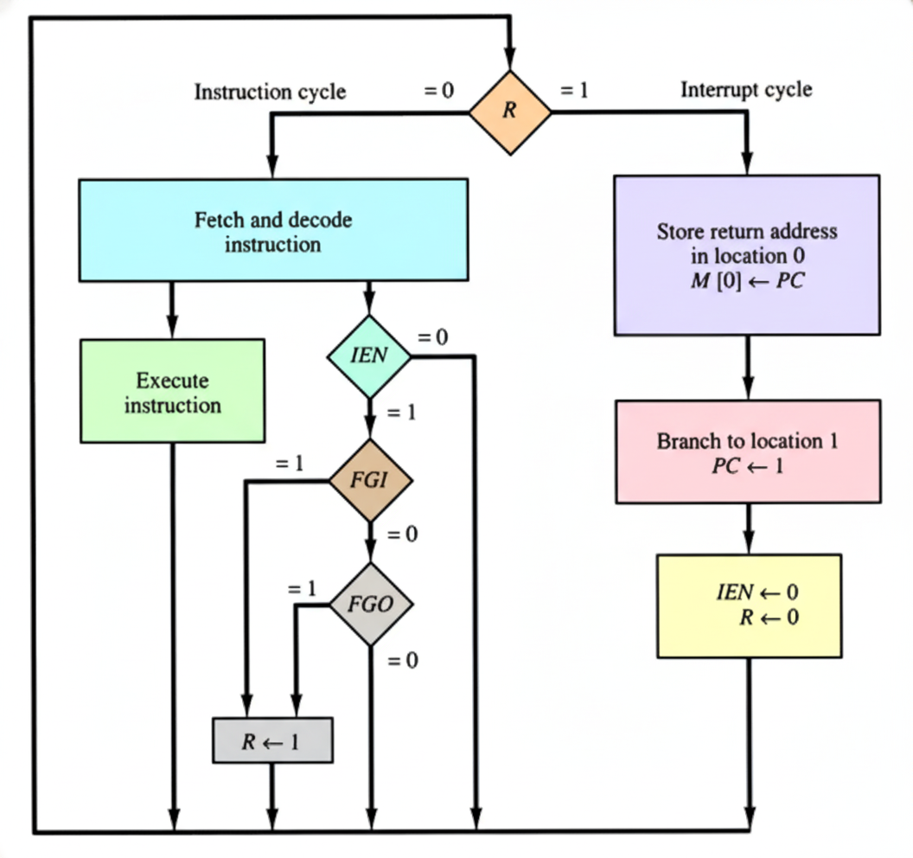
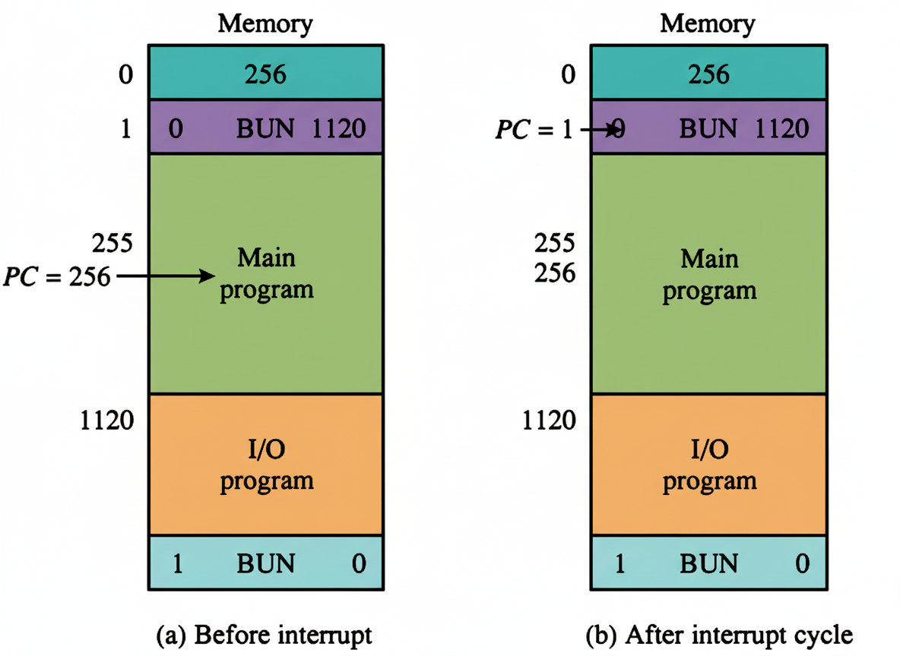

Understanding Programmed I/O & Interrupt Cycles
Program interrupt is a method of programmed control transfer where the computer continuously checks the flag bit for input-output device readiness.
Slow Transfer: When flag bit = 1, transfer occurs at maximum 10 characters/second.
Fast Transfer: Computer processes information at much higher rates.
This speed difference allows the computer to handle other tasks between transfers.
The interrupt flip-flop IEN can be set and cleared with two instructions:

The interrupt cycle is triggered after the execute phase when R = 1, IEN = 1, and the flag bit is set.

The interrupt cycle involves the following sequence of operations:
Program interrupt provides an efficient mechanism for handling I/O operations by: